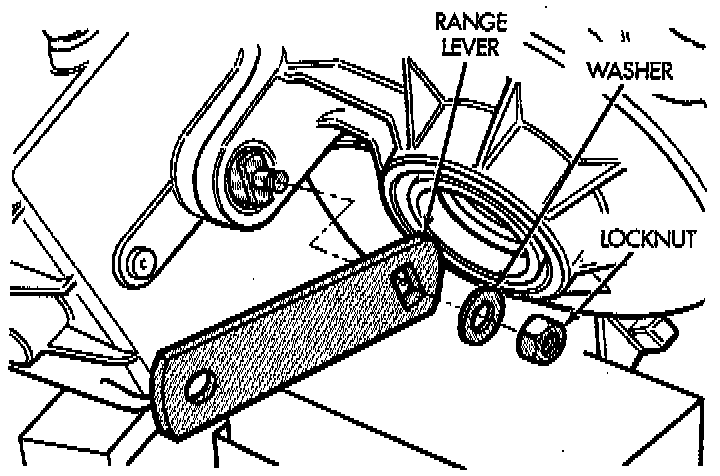
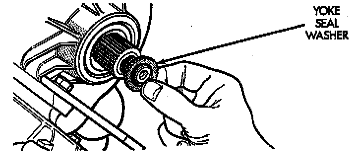
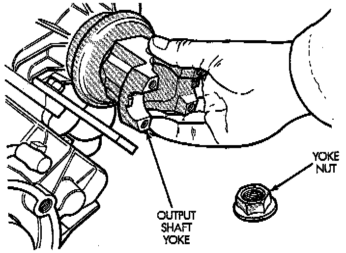

Yoke and Range Lever Installation
1. Install indicator switch in front case. Tighten switch to 20 - 34 Nm (15 - 25 ft. lbs.) torque.
2. Install range lever, washer and locknut on sector shaft. Tighten locknut to 27 - 34 Nm (20 - 25 ft. lbs.) torque.

3. Install new seal washer on front output shaft.
4. Lubricate yoke hub with transmission fluid and install yoke on front shaft.
5. Install new seal washer on front shaft.

6. Install yoke and new yoke nut on front output shaft.
7. Tighten yoke nut to 122 - 176 Nm (90 - 130 ft. lbs.) torque. Use Tool C-3281, or similar tool to hold yoke while tightening yoke nut.